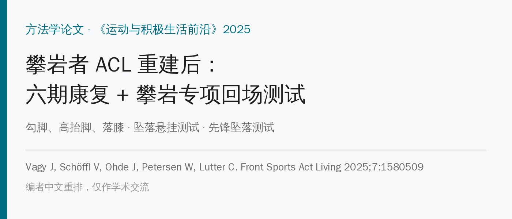
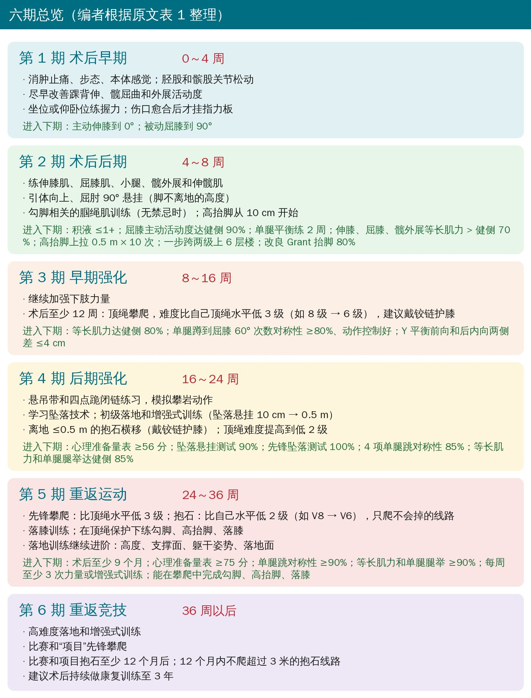
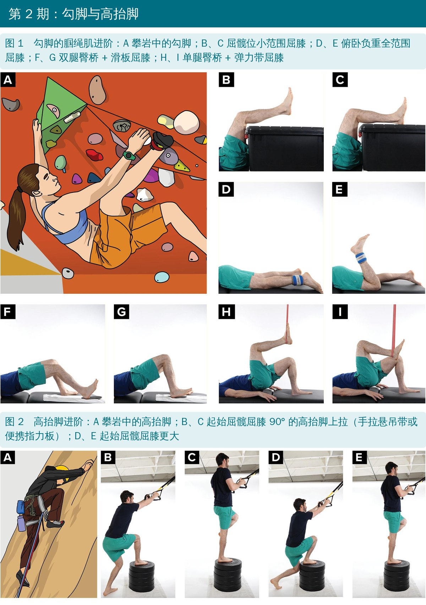
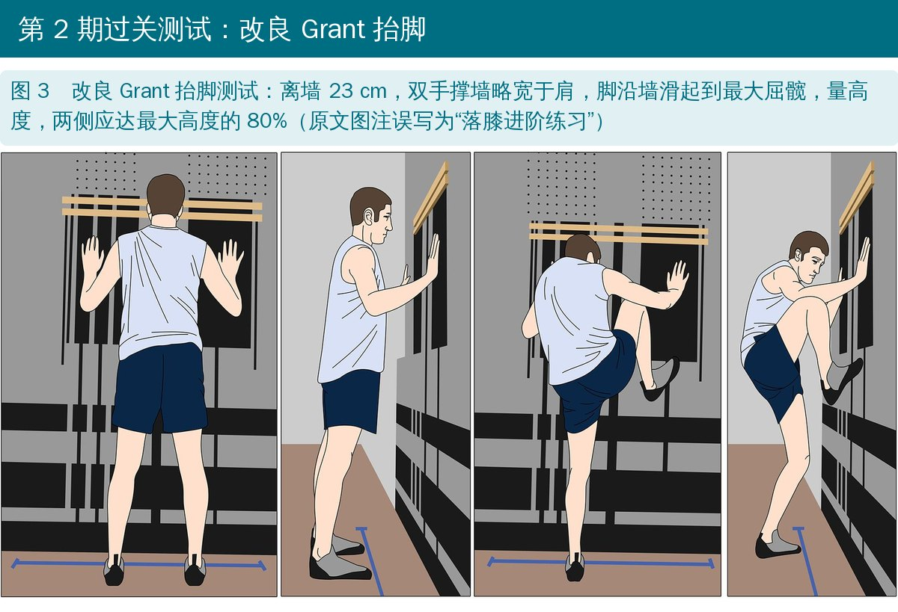
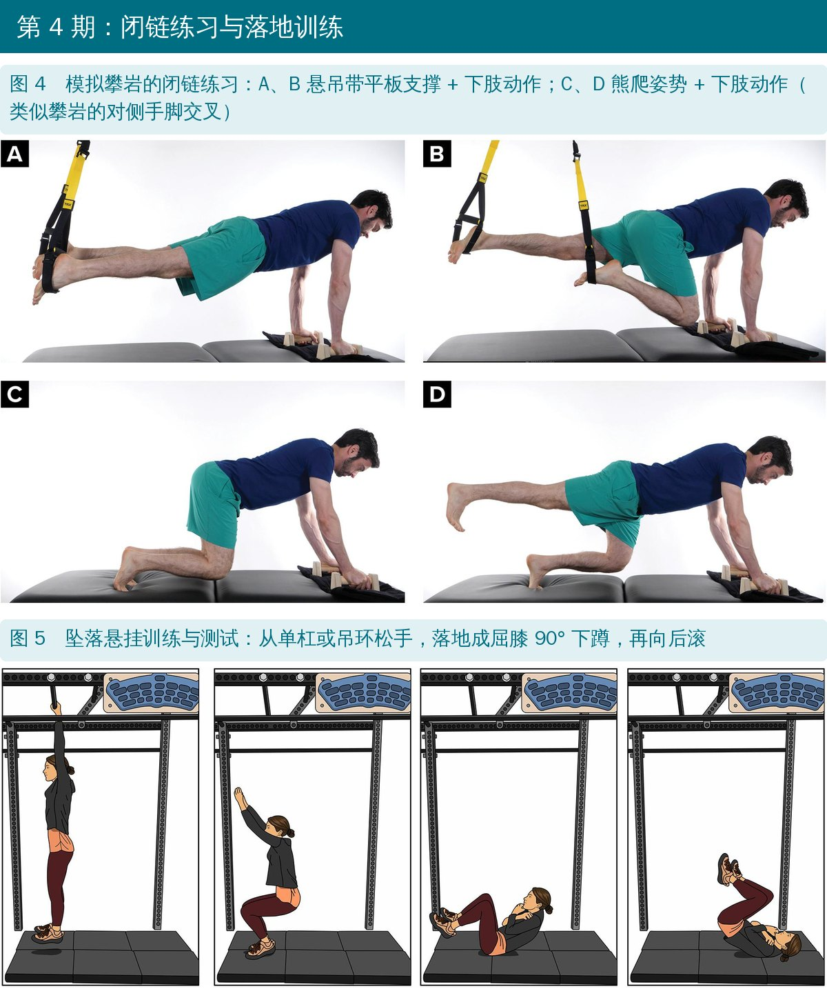
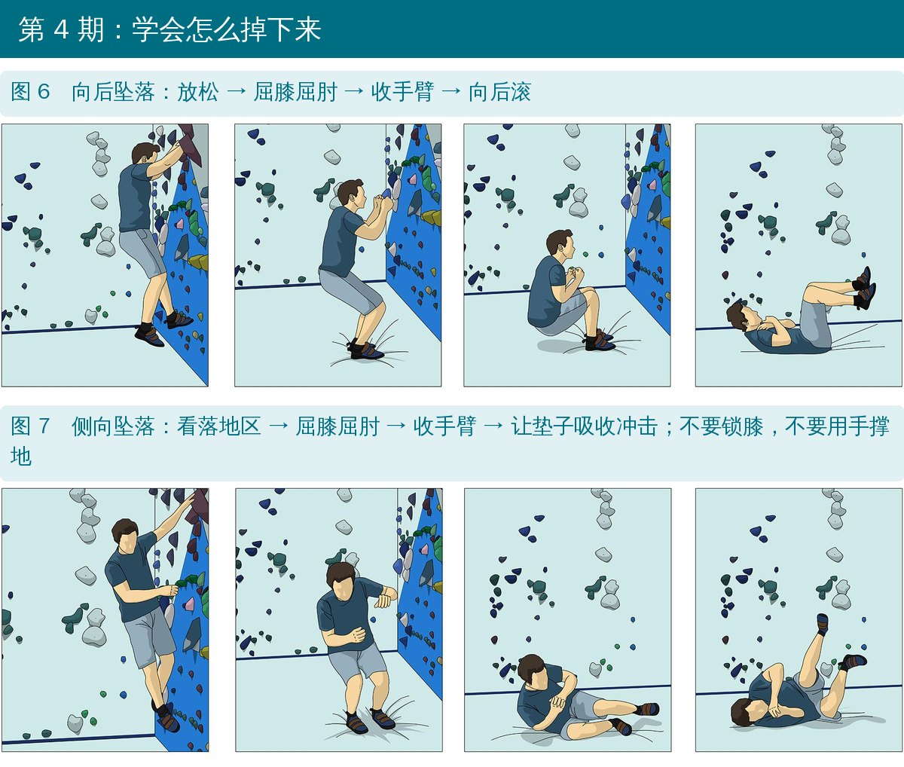
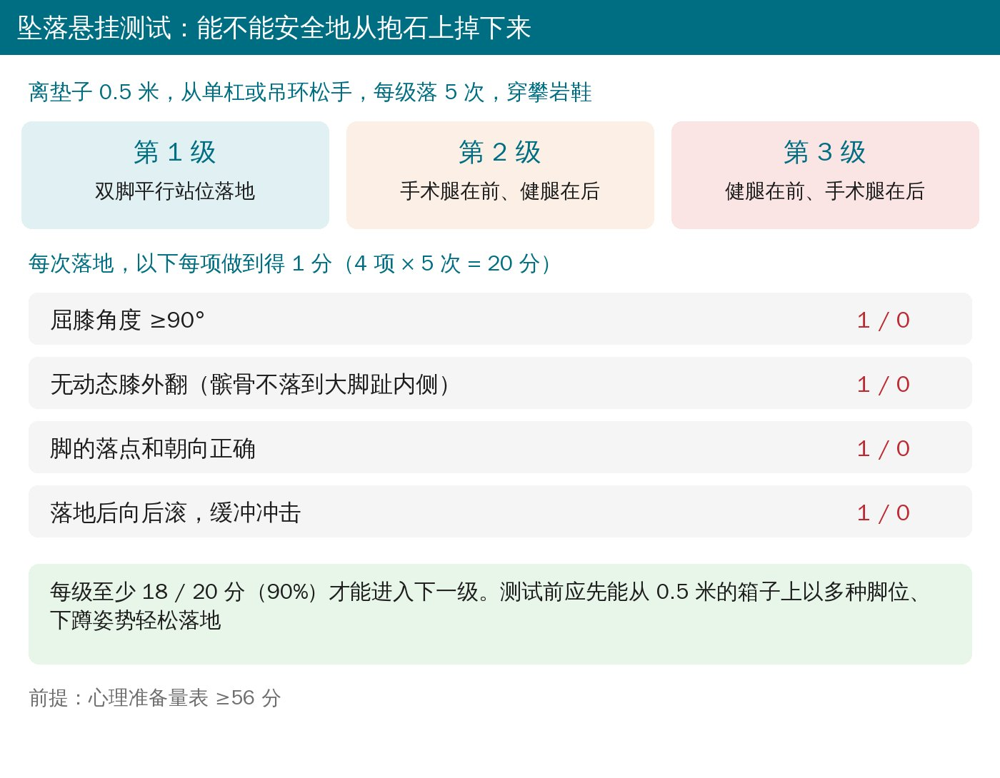
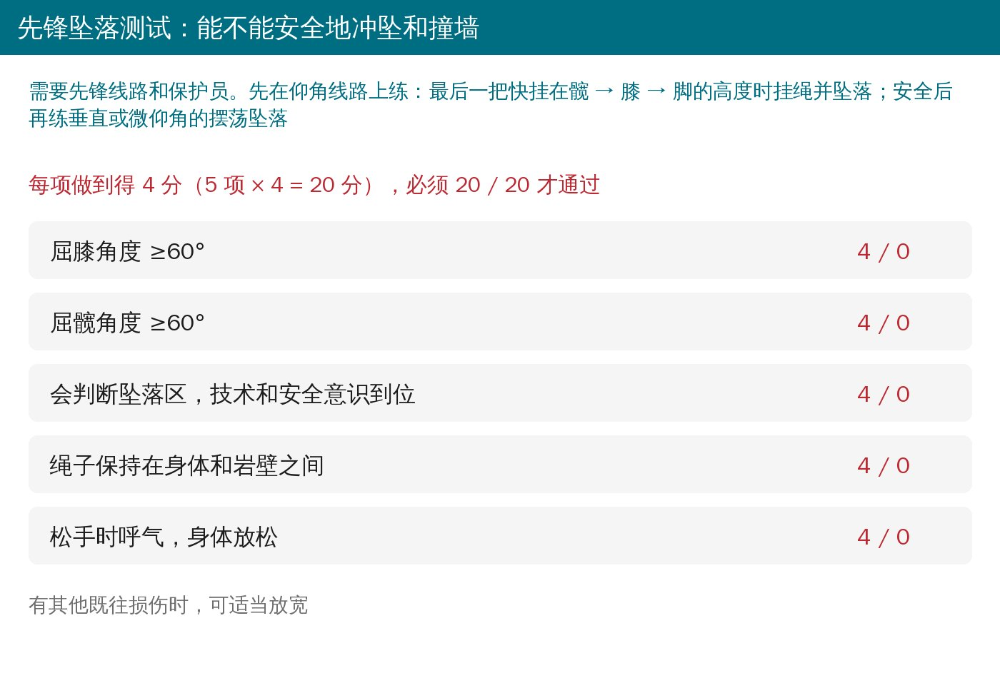
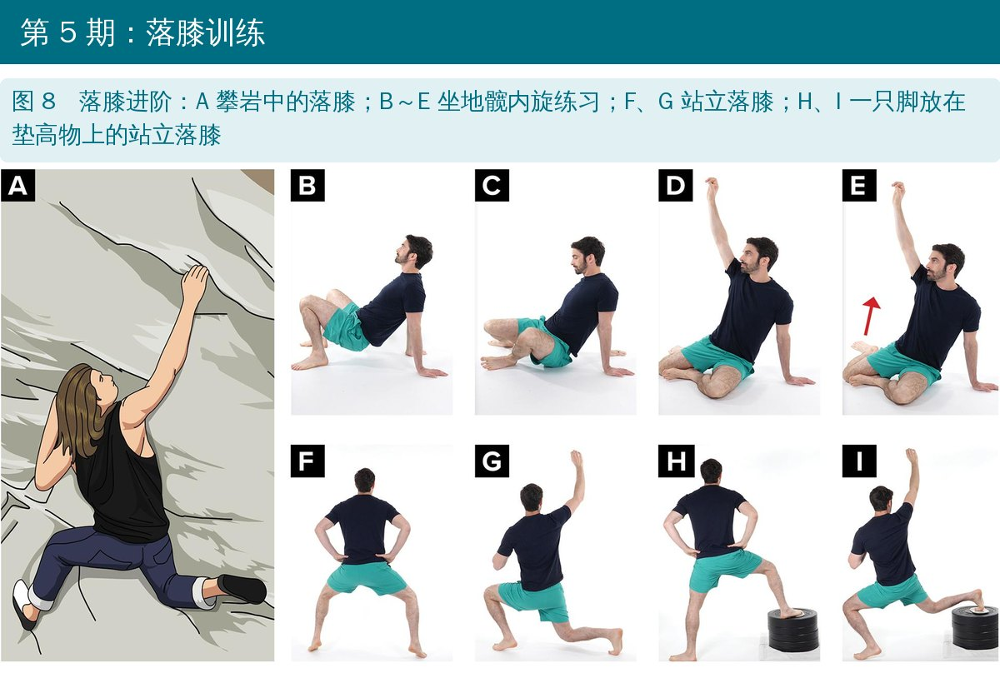

🔖原文信息（编者中文重排）
📚 文献信息
▪ Vagy J, Schöffl V, Ohde J, Petersen W, Lutter C. Anterior cruciate ligament rehabilitation and return to sport in rock climbing athletes: a practical concept paper. Front Sports Act Living. 2025;7:1580509.
▪ 作者来自美国南加州大学、德国班贝格医院、罗斯托克大学医学中心等
▪ 方法学 / 概念性论文（作者提出的方案，尚未验证）
ACL 断裂在攀岩里越来越常见，尤其是抱石：一项研究里，超过 90% 的抱石 ACL 损伤来自从岩壁上掉到地面。
• 球类运动的 ACL 损伤多发生在急停变向；抱石是从最高约 3 米处不受控地坠落、落地时膝外翻
• 先锋攀爬还要面对冲坠后摆荡撞墙
• 常规的回场测试（单腿跳、折返跑）看不到“从高处落地”这种离心负荷
• 攀岩有自己的高风险动作：勾脚、高抬脚、落膝，再加上坠落，是攀岩急性膝伤的主要机制
所以作者在常规 ACL 方案上，加了攀岩专项训练和两个专项回场测试：坠落悬挂测试和先锋坠落测试。
作者强调按标准进阶、不按时间；给的时间是“最早不早于”，防止水平高的攀岩者回得太快。

🔖六期总览
• 消肿止痛、步态、本体感觉和神经肌肉再教育；胫股、髌股关节被动和主动松动
• 尽早练踝背伸和髋屈曲、外展：背伸受限和落地机制差、地面反作用力大有关；髋越灵活，攀岩时膝在末端位越少受力
• 别丢了手指力量：指力是攀岩成绩最强的预测因素，攀岩伤 40% 以上在手和手指。先坐位或卧位练握力，再站着拿便携指力板；伤口愈合、能舒服悬挂后才上指力板，挂板高度以脚不离地为准
• 过关：主动伸膝到 0°、被动屈膝到 90°
• 练伸膝肌、屈膝肌、小腿、髋外展和伸髋肌；平衡和神经肌肉练习加难度
• 上肢：肩带耐力也是攀岩成绩的强预测因素，做引体向上和屈肘 90° 悬挂，单杠高度以脚不离地为准
• 勾脚的腘绳肌训练（无禁忌、非腘绳肌腱移植时）：屈髋位小范围屈膝 → 俯卧负重全范围屈膝 → 双腿臀桥 + 滑板屈膝 → 单腿臀桥 + 弹力带屈膝；同时变换髋内收外展、踝屈伸、胫骨内外旋，模拟岩壁上的勾脚姿势
• 高抬脚：手拉悬吊带或便携指力板辅助，从 10 厘米台阶开始，逐步加到 0.5 米

🔖原文图 1、2
过关标准（比较多）：
• 积液 ≤1+（膨隆试验）；屈膝主动活动度达健侧 90%
• 单腿平衡练习（伸膝、屈膝位，配合上下肢动作）已做 2 周
• 伸膝、屈膝、髋外展等长肌力 > 健侧 70%
• 高抬脚上拉 0.5 米 × 10 次
• 防止靠手臂“作弊”：还要能一步跨两级，连上 6 层楼（大致相当于一条室内线路的垂直爬升）
• 改良 Grant 抬脚测试：离墙 23 厘米，双手撑墙略宽于肩，脚沿墙滑起到最大屈髋，量高度，两侧应达最大高度的 80%

🔖原文图 3
• 继续加强下肢力量
• 术后至少 12 周且第 2 期过关后，可以上顶绳：难度比自己的顶绳水平低 3 级（例如国际登山联合会难度 8 级 → 6 级），刚开始建议戴铰链护膝
• 作者建议先爬仰角线路再爬垂直线路，减少掉落时脚卡在岩壁上的风险
• 过关：等长肌力达健侧 80%；单腿蹲到屈膝 60° 的次数对称性 ≥80%，且无躯干侧倾、无膝外翻、不失衡；Y 平衡前向和后内向两侧差 ≤4 厘米（超过 4 厘米的人更难达到单腿跳 90% 对称）
• 闭链上肢 + 四点跪：悬吊带平板支撑 + 下肢动作（比地面版肌电更高）；熊爬姿势 + 对侧手脚交叉，模拟攀爬
• 坠落悬挂训练：挂在单杠上（或从箱子上退下）松手，落成屈膝 90° 下蹲；从 10 厘米开始，到本期末 0.5 米，变换脚位模拟抱石落地
• 抱石横移：离地 ≤0.5 米的横向攀爬；注意横移时胫骨外旋对 ACL 的应力，戴铰链护膝，学会用健腿下来
• 顶绳难度提高到比自己水平低 2 级

🔖原文图 4、5
学会怎么掉下来：万一落地，要会缓冲。
• 向后掉：放松 → 屈膝屈肘 → 收手臂 → 向后滚
• 侧向掉：看落地区 → 屈膝屈肘 → 收手臂 → 让垫子吸收冲击
• 不要锁膝落地，不要用手撑地
• 先口头讲清楚，再从下蹲位练习向后、向侧滚

🔖原文图 6、7
过关标准：ACL 重返运动心理准备量表 ≥56 分；坠落悬挂测试 90%、先锋坠落测试 100%；单腿跳远、6 米计时单腿跳、三级跳、交叉跳对称性 85%；等长肌力和单腿腿举达健侧 85%；术后至少 24 周。
心理准备量表 ≥56 分后才做。害怕的攀岩者会过度抓握、动作顺序乱，甚至在本来做得到的动作上失误，增加手术腿负担或发生严重坠落。

🔖坠落悬挂测试

🔖先锋坠落测试
• 虽然 6 个月就能进入本期，很多人要到 9 个月左右才达标；在 6～9 个月之间，每推迟 1 个月回场，再伤风险可能降低 51%
• 先锋：比当前顶绳水平低 3 级；抱石：比自己水平低 2 级（如 V8 → V6），只爬确定不会掉的线路；先室内、后户外
• 落膝训练：落膝要把重心压在一只脚外侧、髋内旋贴墙、膝往下沉，需要足够的股直肌长度和髋内旋；从坐地屈髋屈膝 90° 开始 → 站立 → 脚放垫高物上
• 勾脚、高抬脚、落膝在攀爬中从“最大辅助”逐步到“最小辅助”
• 落地训练继续进阶：加高度；支撑面从宽到窄、对称到错开、脚尖朝前到外八；躯干从前倾（臀肌吸收）到直立（伸膝装置吸收）；口令“轻轻落地”能降低 ACL 负荷
• 攀岩对心肺也有要求，疲劳会影响技术和决策、增加 ACL 风险，所以要在安全环境下做接近最大强度的模拟攀爬

🔖原文图 8
过关：术后至少 9 个月；心理准备量表 ≥75 分；单腿跳、等长肌力、单腿腿举都 ≥90%；每周至少 3 次力量或增强式训练；能在抱石或先锋中完成勾脚、高抬脚、落膝，能爬到自己的水平。
• 高难度落地、增强式和带本体感觉挑战的力量训练
• 可以参加先锋比赛、爬自己的“项目”线路
• 比赛和项目抱石至少 12 个月后，12 个月内不爬超过 3 米的抱石线路
• 建议术后持续做康复训练到 3 年，降低再断裂风险
• 这是作者提出的方案，没有验证：作者自己说“早期在个别攀岩者身上使用有希望”，需要研究检验安全性和有效性
• 坠落悬挂测试、先锋坠落测试是新设计的，没有信度、效度和常模数据；分数线（90%、100%）是作者定的
• 大部分过关标准借用了球类运动的 ACL 研究
原文里对不上的地方：
• 背景说 71 名急性膝伤患者中有 7 例 ACL 断裂，占 9.1%；7/71 实际约 9.9%
• 图 3 图注写“落膝进阶练习”，但图里是第 2 期的改良 Grant 抬脚测试
• 先锋坠落测试 100% 是第 4 期的过关标准，但先锋攀爬要到第 5 期才允许，第 4 期怎么做先锋坠落没有交代
• 第 3 期表格写“开始低风险的垂直攀爬”，正文又说先爬仰角线路、再过渡到垂直，前后矛盾
• 难度换算不一致：8 级 → 6 级被说成“低 3 级”，8 级 → 7+ 却说成“低 2 级”（按国际登山联合会的细分，两者分别差 6 档和 2 档）
• 第 5 期过关要求“术后至少 9 个月”（约 39 周），第 6 期却写“36 周以后开始”；坠落悬挂测试写“18 英寸（0.5 米）”，18 英寸约 0.46 米
• 攀岩者术后第一天就可以练手指和上肢，但伤口愈合前别挂指力板
• 早练踝背伸和髋屈曲外展，这两项对落地和高抬脚都很关键
• 勾脚练腘绳肌、高抬脚练伸膝伸髋、落膝练髋内旋，分阶段从地面练到岩壁
• 第 2 期用“一步跨两级上 6 层楼”防止靠手臂代偿
• 教会攀岩者怎么掉：屈膝屈肘、收手、滚，不锁膝、不撑手
• 回抱石前做坠落悬挂测试，回先锋前做先锋坠落测试
• 顶绳 → 先锋 → 抱石，难度从低 3 级开始；12 个月内不爬 3 米以上的抱石
原文表 1 攀岩者 ACL 重建术后康复方案
| 分期 | 干预重点 | 攀岩专项活动 | 进入下期的标准 |
|---|---|---|---|
| 第 1 期（0～4 周）术后早期 | 减轻疼痛；消肿；开始本体感觉、平衡和神经肌肉再教育；步态训练；胫股和髌股关节被动、主动松动；改善髋屈曲和外展；改善踝背伸 | 开始坐位或卧位手指训练；建议伤口完全愈合后再挂指力板 | 主动伸膝完全；被动屈膝到 90° |
| 第 2 期（4～8 周）术后后期 | 继续改善活动度；加强伸膝肌、屈膝肌、小腿、髋外展和伸髋肌；平衡和神经肌肉练习加难度；维持或提高手指和肩带力量；开始攀岩动作的分解练习；提高上肢辅助下的上台阶能力 | 悬挂下的肩带力量和耐力练习；开始勾脚相关的腘绳肌训练（无禁忌时）；高抬脚从 10 厘米开始 | 改良 Grant 抬脚 80%；高抬脚上拉 0.5 米 × 10 次；一步跨两级上 6 层楼；积液 ≤1+；屈膝主动活动度达健侧 90%；单腿平衡练习（伸膝、屈膝位，配合上下肢动作）2 周；伸膝、屈膝、髋外展等长肌力 > 健侧 70% |
| 第 3 期（8～16 周）早期强化 | 开始低风险的垂直攀爬动作；加强伸膝肌、屈膝肌、小腿、髋外展和伸髋肌 | 顶绳难度比估计水平低 3 级（8 级 → 6 级，国际登山联合会难度），建议至少 12 周后开始 | 等长肌力达健侧 80%；单腿蹲到屈膝 60° 次数对称性 ≥80%，控制和质量良好；Y 平衡前向和后内向两侧差 ≤4 厘米 |
| 第 4 期（16～24 周）后期强化 | 加入低风险的横向攀爬动作；恢复四点跪负重动作和协调；加大下肢训练强度和动作难度；坠落技术教育；开始初级落地和增强式训练 | 离地不超过 0.5 米的次最大强度抱石横移，建议戴铰链护膝；顶绳难度提高到低 2 级（8 级 → 7+）；模拟攀爬的闭链上肢和四点跪练习；早期落地训练，从低处开始到 0.5 米 | 心理准备量表 ≥56 分；坠落悬挂测试 90%；先锋坠落测试 100%；单腿跳远、6 米计时单腿跳、三级跳、交叉跳对称性 85%；等长肌力达健侧 85%；单腿腿举达健侧 85% |
| 第 5 期（24～36 周）重返运动 | 重新训练落地（抱石和先锋）；加强并协调攀岩专项动作；进阶到中级落地和增强式训练 | 先锋难度比当前顶绳水平低 3 级（8 级 → 6 级）；垂直、不会掉的抱石，比估计水平低 2 级（V8 → V6）；落膝训练；在顶绳保护下练勾脚、高抬脚、落膝，再用到抱石或先锋中；落地训练进阶 | 术后至少 9 个月；每周至少 3 次力量或增强式训练；能在抱石或先锋中完成勾脚、高抬脚、落膝；能爬到自己的水平；心理准备量表 ≥75 分；单腿跳对称性 ≥90%；等长肌力 ≥90%；单腿腿举 ≥90% |
| 第 6 期（36 周以后）重返竞技 | 建议不早于术后 36 周；高处下落跳；带本体感觉挑战的高级力量训练；进阶到高级落地和增强式训练 | 先锋比赛；先锋项目线路；抱石比赛（建议至少 12 个月后）；抱石项目线路（12 个月内避免超过 3 米的线路） | 建议术后持续做康复训练至 3 年，降低 ACL 再损伤风险 |
原文表 2 坠落悬挂评分（每级落 5 次）
| 级别 | 描述 |
|---|---|
| 第 1 级 | 松手，双腿中立位落在抱石垫上 |
| 第 2 级 | 松手，手术腿在前、健腿在后落地 |
| 第 3 级 | 松手，健腿在前、手术腿在后落地 |
| 评分项 | 是（1 分） | 否（0 分） |
|---|---|---|
| 屈膝角度 ≥90° | ||
| 无动态膝外翻（髌骨落到大脚趾内侧） | ||
| 脚的落点朝向正确 | ||
| 向后滚 | ||
| 总分 | ____ / 20 |
原文表 3 先锋坠落评分
| 评分项 | 是（4 分） | 否（0 分） |
|---|---|---|
| 屈膝角度 ≥60° | ||
| 屈髋角度 ≥60° | ||
| 会判断坠落区，技术和安全意识到位 | ||
| 绳子保持在身体和岩壁之间 | ||
| 松手时呼气，身体放松 | ||
| 总分 | ____ / 20 |
欢迎关注悦美力公众号，获取更多物理治疗的专业知识！
📄参考文献：
Vagy J, Schöffl V, Ohde J, Petersen W, Lutter C. Anterior cruciate ligament rehabilitation and return to sport in rock climbing athletes: a practical concept paper. Front Sports Act Living. 2025;7:1580509. doi:10.3389/fspor.2025.1580509
原文以知识共享署名协议（CC BY）发表。本文为中文解读，插图引自原文图 1～8（编者加中文标注），六期总览、坠落悬挂评分卡与先锋坠落评分卡为编者中文绘制，表格为编者翻译。